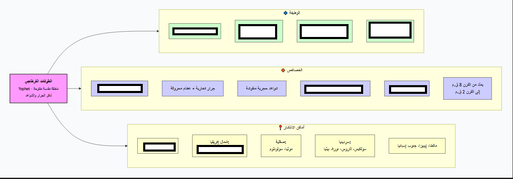
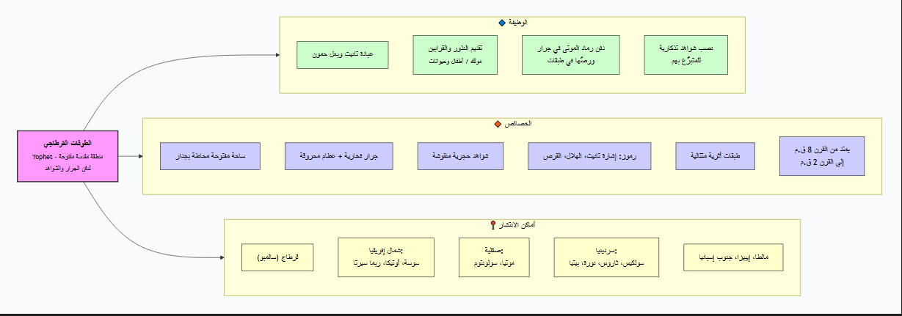

تمارين – قرطاج: المؤسسات السياسية والديانة
- بعل حمون:
- كبير الآلهة وحاميها، وهو على شكل آدمي يستوي على عرشه ويرفع يده اليمنى ويمسك صولجاناً بيده اليسرى رمزاً للسلطة والهيمنة. يُعتبر الإله الأكبر في البانثيون القرطاجي، وتُقدَّم له النذور والقرابين، ويُستشفع به في الحرب والخصب والحماية، وظل رمزاً للهوية الدينية القرطاجية حتى بعد سقوط المدينة.
- تانيت:
- جُسّدت على شكل امرأة جالسة على كرسي وفي حضنها طفل صغير، لذلك اعتبرت رمز الخصوبة والازدهار. تُلقَّب بـ«وجه بعل» أي ظهور الإله الأكبر، وجمعت بين وظيفة الأم الحامية وإلهة القمر والخصب، وتشبه في بعض وظائفها الإلهة إيزيس في مصر وعشتار في بلاد الرافدين.
- ملقرط:
- إله مدينة صور ويمثل حامي البحار والمستوطنات. يرتبط بالتجارة والملاحة والحرب، وانتقلت عبادته مع الفينيقيين إلى كل مستوطناتهم في المتوسط، ويُشبه في وظائفه الإله الإغريقي هرقل، وقد ساهم في ربط المستوطنات القرطاجية بروابط دينية مشتركة.
- الطوفات:
- معبد بوني غير مشيد يقدم فيه القرطاجيون الأضاحي للإله بعل حمون والإلهة تانيت. تُقدَّم فيه القرابين الحيوانية أو البشرية وتُحرق ويوضع رمادها في جرار تُثبَّت في أرضية الطوفات ومعها نصب يذكر فيه اسم صاحبها. وُجدت في قرطاج وسوسة وموتية، ويُعد من أهم المعالم الدينية في العالم القديم، ويشبه في وظيفته المقابر الجماعية والمعابد في آن واحد.
| أصل الآلهة | الآلهة | العدد |
|---|---|---|
| فينيقي | بعل حمون، تانيت، ملقرط | 3 |
| إغريقي مدمج | ديمترا، برسفونا | 2 |
المصدر: كتاب «السياسة» لأرسطو والمصادر التاريخية حول قرطاج


الطوفات معبد بوني غير مشيد يُقدَّم فيه القرطاجيون الأضاحي للإله بعل حمون والإلهة تانيت. تُقدَّم فيه القرابين الحيوانية أو البشرية وتُحرق، ويوضع رمادها في جرار تُثبَّت في أرضية الطوفات ومعها نصب يذكر فيه اسم صاحبها. وُجدت الطوفات في قرطاج وفي مستوطنات أخرى مثل سوسة وموتية، مما يدل على وحدة العقيدة الدينية في المجال القرطاجي. ويُعد الطوفات من أهم المعالم الدينية في العالم القديم، ويشبه في وظيفته المقابر الجماعية والمعابد في آن واحد، وقد اهتم القرطاجيون بتزيينه بالنقوش والنذور.
- مقدمة: تقديم الديانة القرطاجية كديانة متعددة الآلهة ومنفتحة.
- تطوير: أولاً. مظاهر الانفتاح الديني (الآلهة الفينيقية والإغريقية)؛ ثانياً. أثره على الروابط التجارية والثقافية مع شعوب المتوسط.
- خاتمة: أهمية هذا الانفتاح في تميز الحضارة القرطاجية.
مقدمة
تميزت الديانة القرطاجية بتعدد الآلهة وبانفتاح نادر على آلهة الشعوب الأخرى في المتوسط، وهو ما جعلها من أكثر الديانات القديمة ثراء وتنوعاً.
تطوير
أولاً. مظاهر الانفتاح الديني
ضم البانثيون القرطاجي آلهة فينيقية كبرى (بعل حمون، وتانيت، وملقرط)، كما أُدمجت فيه آلهة إغريقية (ديمترا وبرسفونا) خاصة في الفترة الهلنستية حيث أُقيم لهما معبد في المدينة. يدل ذلك على أن القرطاجيين لم يرفضوا آلهة الشعوب الأخرى بل أدمجوها في معتقداتهم، وهو ما يميزهم عن الفرس والمصريين الذين لم يعرفوا هذا الانفتاح الديني بهذه الصورة.
ثانياً. أثره على الروابط التجارية والثقافية
ساهم هذا الانفتاح الديني في تقوية الروابط التجارية والثقافية بين قرطاج وشعوب المتوسط، إذ كان للديانة دور في ربط المستوطنات القرطاجية بعضها ببعض وفي تسهيل التعامل مع الشعوب الأخرى، خاصة الإغريق. كما أن هذا الانفتاح يعكس المكانة الحضارية المرموقة التي بلغتها قرطاج في المتوسط.
خاتمة
هكذا يُعد الانفتاح الديني سمة مميزة للحضارة القرطاجية، وقد أسهم في إثراء المعتقد القرطاجي وفي تقوية الروابط الثقافية والتجارية مع شعوب المتوسط.